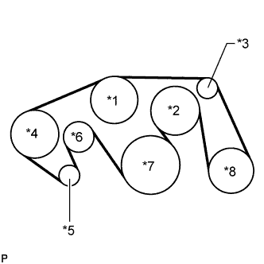

VANE PUMP > INSTALLATION |
| 1. INSTALL VANE PUMP ASSEMBLY |
Install the vane pump with the 2 bolts.
| 2. CONNECT PRESSURE FEED TUBE |
Install a new gasket to the pressure feed tube.
Connect the pressure feed tube and install the union bolt.
| 3. CONNECT POWER STEERING OIL PRESSURE SWITCH CONNECTOR |
Connect the connector.
| 4. CONNECT NO. 1 OIL RESERVOIR TO PUMP HOSE |
Connect the No. 1 oil reservoir to pump hose to the vane pump assembly with the clip.
| 5. INSTALL FAN AND GENERATOR V BELT |
|  |
Set the fan and generator V belt onto every part.
| *1 | Water Pump Pulley |
| *2 | Fan Pulley |
| *3 | No. 1 Idler Pulley |
| *4 | Vane Pump Pulley |
| *5 | Generator Pulley |
| *6 | V-ribbed Belt Tensioner |
| *7 | Crankshaft Pulley |
| *8 | Cooler Compressor Pulley |
While turning the belt tensioner counterclockwise, remove the pin.
Check that the belt fits properly in the ribbed grooves.
| 6. INSTALL RADIATOR SUPPORT UPPER SEAL |
Install the upper radiator support seal with the 13 clips.
| 7. INSTALL AIR CLEANER CASE |
Install the air cleaner case with the 3 bolts.
| 8. INSTALL AIR CLEANER FILTER ELEMENT SUB-ASSEMBLY |
| 9. INSTALL AIR CLEANER CAP AND HOSE |
Install the front bumper cover (Click here).
| 10. INSTALL V-BANK COVER SUB-ASSEMBLY |
 |
Attach the 2 V-bank cover hooks to the No. 1 V-bank cover bracket. Then align the 2 V-bank cover grommets with the 2 pins and press down on the V-bank cover to attach the pins.
| *1 | Pin |
| *2 | Grommet |
| *3 | Hook |
| *4 | No. 1 V-bank Cover Bracket |
| 11. INSTALL FRONT FENDER APRON SEAL RH |
Install the front fender apron seal RH with the 4 clips.
| 12. INSTALL FRONT WHEEL RH |
| 13. CONNECT CABLE TO NEGATIVE BATTERY TERMINAL |
| 14. ADD POWER STEERING FLUID |
| 15. BLEED POWER STEERING FLUID |
Check the fluid level.
Jack up the front of the vehicle and support it with stands.
Turn the steering wheel.
With the engine stopped, turn the wheel slowly from lock to lock several times.
Lower the vehicle.
Start the engine.
Run the engine at idle for a few minutes.
Turn the steering wheel.
With the engine idling, turn the wheel to the left or right full lock position and keep it there for 2 to 3 seconds, then turn the wheel to the opposite full lock position and keep it there for 2 to 3 seconds.*1
Repeat *1 several times.
Stop the engine.
 |
Check for foaming or emulsification.
| *a | CORRECT |
| *b | INCORRECT |
Check the fluid level.
| 16. INSPECT FOR POWER STEERING FLUID LEAK |